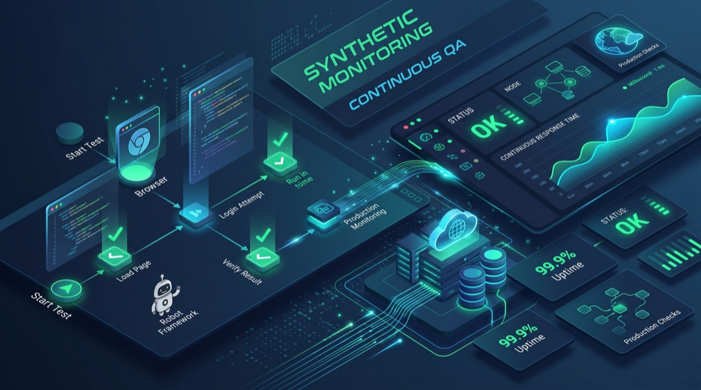

Neka testovi rade i poslije objave: Checkmk Synthetic Monitoring za QA timove
Kako QA timovi mogu da pretvore Robot Framework testove u stalne provjere produkcije uz Checkmk, i na koje zamke treba računati.
Zamislite regresioni skup testova koji prođe u petak. Objava ode u produkciju, a u nedjelju se login pokvari jer je eksterni identity provider nešto promijenio. U nedjelju se nijedan test ne pokreće, pa je prvi signal tiket korisničke podrške. Većina skupova testova staje na deployment kapiji, a najrizičniji period za korisnički tok je sve ono što se dešava poslije nje. Checkmk nudi jedan način da mali broj vaših end-to-end testova nastavi da radi nad produkcijom i da se njihovi padovi tretiraju kao svaki drugi operativni alarm.

Šta je Checkmk iz ugla testera
Checkmk je platforma za monitoring i observability hibridnih okruženja: servera, mreža, baza podataka, cloud servisa, Kubernetesa i aplikacija, sa katalogom od preko 2.000 integracija. Postoji besplatno, open-source Community izdanje namijenjeno manjim okruženjima (otprilike do 100 hostova) i nekoliko komercijalnih izdanja.
Za QA posao su bitna tri dijela:
- Synthetic Monitoring, koji pokreće Robot Framework testove po rasporedu i svaki test prikazuje kao nadgledani servis. Dio je komercijalnih izdanja i zahtijeva dodatnu pretplatu.
- Kontekst infrastrukture. Kada test padne, metrike hosta, baze ili mreže možete pogledati u istom alatu umjesto da nagađate.
- Integracije i API-ji za Jiru, Slack, ServiceNow i REST API, tako da alarmi stižu tamo gdje vaš tim već radi.
Kako se dijelovi uklapaju
Tok je jednostavan kada ga jednom vidite:
- Napišete skup testova u Robot Frameworku.
- Na test čvoru (Linux ili Windows) Robotmk scheduler pravi izolovano Python okruženje za skup i pokreće ga prema planu koji definiše interval i opcije poput automatskog ponovnog pokretanja.
- Rezultati se upisuju u fajl sistem, a prikuplja ih Robotmk agent plugin.
- U Checkmku se svaki test pojavljuje kao servis sa stanjem OK, WARN ili CRIT, a sve se podešava kroz Robotmk scheduler pravilo i distribuira preko Agent Bakery-ja.
Detalj koji vrijedi znati prije početka: prve verzije su za pravljenje okruženja koristile RCC od Robocorpa. Robocorp je ugasio RCC 2024. godine, a Checkmk dokumentacija za nova podešavanja preporučuje noviji CSM/Micromamba pristup. Stariji tutorijali koji pominju robot.yaml i RCC opisuju zastarjeli put.
Konkretan primjer: nadgledanje login toka
Evo malog skupa napisanog uz Robot Framework Browser biblioteku. Namjerno je podijeljen na korisničke ključne riječi (keywords), jer se ta struktura kasnije isplati.
*** Settings ***
Library Browser
Suite Setup New Browser chromium headless=True
*** Variables ***
${BASE_URL} https://shop.example.com
*** Test Cases ***
Customer Can Log In
Open Login Page
Submit Login
Get Text h1 == My account
*** Keywords ***
Open Login Page
New Page ${BASE_URL}/login
Submit Login
Fill Text id=username ${MONITOR_USER}
Fill Secret id=password $MONITOR_PASSWORD
Click button[type="submit"]Kredencijali dolaze kao varijable izvan skupa, pa nikada ne završe u repozitorijumu. Fill Secret drži lozinku van Robot loga.
Kada ovo radi pod Robotmk-om, Checkmk vam daje servis za Customer Can Log In koji prati tri stvari: da li ulazna stranica odgovara (dostupnost), da li se tok završava očekivanim rezultatom (funkcionalnost) i koliko traje (vrijeme izvršavanja). Zatim dodate pragove, na primjer upozorenje kada cijeli tok traje duže od nekoliko sekundi i kritično stanje kada padne ili traje mnogo duže. Prave vrijednosti zavise od vaše polazne osnove, pa mjerite sedmicu dana prije nego što se obavežete na njih.
Podjela na ključne riječi je bitna zbog KPI monitoringa. Uz KPI discovery pravilo možete pojedinačne ključne riječi, poput Submit Login, pretvoriti u zasebne servise (do pet po testu). Kada se tok uspori, odmah vidite da li vrijeme odlazi na učitavanje stranice ili na autentifikaciju, što vas usmjerava ka frontendu, backendu ili identity provideru.
Uključite automatsko ponovno pokretanje za ovaj plan. Jedan pad izazvan kratkim prekidom mreže ne bi trebalo nikoga da probudi; dva uzastopna pada vjerovatno bi trebalo.
Gdje se ovo uklapa u strategiju testiranja
Synthetic monitoring ne zamjenjuje testove u pipeline-u. On odgovara na drugo pitanje.
| Regresija prije objave | Checkmk sintetički monitor | |
|---|---|---|
| Pitanje | Da li novi build radi? | Da li živi sistem i dalje radi? |
| Kada se pokreće | Na svaki build ili prije objave | Stalno, u fiksnom intervalu |
| Obim | Širok, mnogo scenarija | Nekoliko kritičnih tokova |
| Podaci | Pripremljeni test podaci | Namjenski monitor nalozi u produkciji |
| Ko reaguje na pad | Developeri i QA | Dežurni operativni tim, a QA je vlasnik testa |
Postoji i druga, manje očigledna primjena: nadgledanje vaših test okruženja. Velik dio „nestabilnih" padova na stagingu dolazi od samog okruženja: pun disk, preopterećena baza, istekao sertifikat. Ako Checkmk (čak i besplatno Community izdanje) usmjerite na staging hostove, možete provjeriti stanje infrastrukture u trenutku kada je test pao, prije nego što počnete da debagujete sam test.
Zamke i ograničenja
- Sporedni efekti u produkciji. Checkout monitor koji pravi prave narudžbe pravi i prave probleme. Koristite namjenske naloge, zaustavite se prije nepovratnog koraka ili pokrećite tokove plaćanja nad sandbox provajderom gdje on postoji.
- Nestabilni monitori brzo troše povjerenje. U CI-ju nestabilan test košta jedno ponovno pokretanje. U monitoringu uči dežurni tim da ignoriše alarme. Koristite stabilne selektore, ponovna pokretanja i realne pragove, i radije uklonite monitor nego da ga ostavite da stvara buku.
- Vlasništvo nakon UI izmjena. Svaka objava može pokvariti monitor, a da proizvod ostane ispravan. Unaprijed se dogovorite ko ažurira skup i uključite monitor skupove u definition of done za UI izmjene.
- Trošak i ograničenja izdanja. Synthetic Monitoring nije dio Community izdanja i zahtijeva posebnu pretplatu. Za jedan javni sajt možda je dovoljna jednostavnija uptime ili HTTP provjera.
- Održavanje čvorova. Test čvorovima trebaju ažuriranja browsera, kredencijali i mrežni pristup. Tretirajte ih kao produkcione sisteme, uključujući način na koji se na njima čuvaju tajne.
- Iluzija pokrivenosti. Pet zelenih monitora ne govori ništa o stotinu tokova koje niste skriptovali.
Šta dalje
- Istražite javni demo na play.checkmk.com da vidite kako se testovi prikazuju kao servisi, bez ikakve instalacije.
- Izaberite dva ili tri poslovno kritična toka iz postojećih Robot Framework skupova i uklonite sve korake sa sporednim efektima.
- Instalirajte Community izdanje na slobodnu mašinu i nadgledajte staging hostove, kako bi podaci o infrastrukturi bili dostupni sljedeći put kada test neočekivano padne.
- Ako vaša organizacija ima komercijalno izdanje, pratite Robotmk vodič zasnovan na CSM-u i podesite jedan plan sa ponovnim pokretanjima i pragovima trajanja prije nego što proširite postavku.